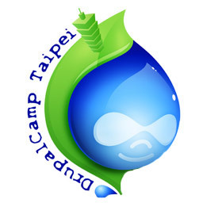

也紀念我們永遠的朋友 李士傑先生（Shih-Chieh Ilya Li）。
Drupal 的架構與彈性，讓學生也能架出最潮的酷玩網站！
連續三年得獎，且榮獲首屆開放原始碼內容管理系統風雲榜首獎的 Drupal，將於7月10日在中央研究院學術活動中心舉辦研討會（DrupalCamp Taipei 2010）。DrupalCamp Taipei 除了邀請國內 Drupal 好手進行分享之外，此次活動也將由最多人使用的 Drupal 版型－Zen－的開發者 John Albin 進行主題演講，分享 Drupal 7的最新發展趨勢。
Drupal 是一套開放原始碼的網站內容管理系統，可用來建置各種類型的網站，例如新聞媒體、電子商務、企業網站、社群網站、影音網站等，它被廣泛應用在商業領域、教育單位、非營利組織與政府部門，包括美國白宮、華納唱片、杜克大學、國際特赦組織、世界銀行等知名商業公司與重要的組織單位。
在台灣，一群熱心的志工自行組成 Drupal Taiwan 正體中文社群。今年將首次於台北舉辦 DrupalCamp。DrupalCamp 是 Drupal社群在世界各大城市舉辦的活動，針對網站開發者、管理者、經營者的需求，分享 Drupal 相關的知識，包括網路趨勢、案例研究、模組開發、版型設計等議程。
與其他國家不同的是，Drupal Taiwan 活動參與者的年齡層非常廣泛，有許多年輕的學子主動地加入籌辦行列。例如志工有一名現就讀國中二年級的學生，當一般國中生多埋首於電玩漫畫為主要娛樂活動之際，他卻非常熱心地參與本次 DrupalCamp 的籌備工作。目前他的階段目標是利用 Drupal平台的架站技術，幫忙班級網站進行改版，以讓自己的技術能力，不落於當代網際網路的發展趨勢。
DrupalCamp 將於 7 月 10 日在中央研究院學術活動中心進行一整天的活動，歡迎對於新一代網站內容管理系統有興趣的使用者、開發者，與網站的經營者一同參與。本活動需透過線上報名並繳費以登錄參加資料，一般門票為 800 元，6 月 10 日以前提前報名的門票優惠為 500 元，還可參加贈品抽獎。進一步的活動資訊，請參考 Drupal Taiwan 網站所公佈的資訊，網址：https://drupaltaiwan.org 。
◎ 任何媒體或採訪需求，亦歡迎至 https://drupaltaiwan.org/contact 來聯繫我們。

You may be interested in the following articles:
Address：No.128, Sec.2, Academia Rd., Institute of Information Science, Academia Sinica, Nangang District, Taipei City 11529, Taiwan (R.O.C).
Privacy Policy. Terms-of-use